네 가지 관리 축
건물마다 규모와 용도, 입주사 근무시간이 다르기 때문에 인원과 근무 형태는 현장에 맞춰 정합니다. 아래는 관리 축별로 기본으로 맡는 일입니다.
시설관리
전기·기계·소방·승강기·위생 설비를 법정 선임 기준에 맞춰 운영합니다. 관리소장과 시설팀장이 낮 근무를, 시설기사가 주·당·비 3교대로 야간과 휴일을 맡는 구조가 기본입니다.
- 전기안전관리자, 기계설비유지관리자, 소방안전관리자, 승강기안전관리자 선임
- 법정검사 일정 관리와 예방점검, 수선 이력과 교체 주기 기록
- 누수·정전·설비 고장 시 긴급 대응, 협력업체 배정과 작업 확인
- 중장기 보수계획과 공사비 우선순위 제안
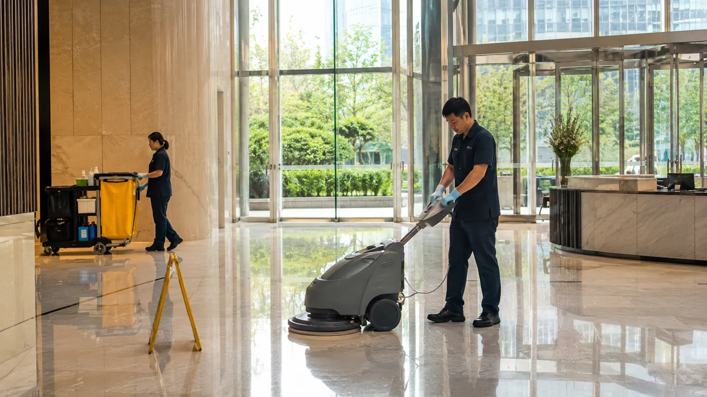
미화관리
층별 용도와 면적에 맞춰 담당 구역과 순회 시간을 정합니다. 주간조가 이른 아침부터 공용부와 전용부를, 오후조가 화장실과 휴게공간을 반복 점검하고, 주말에는 대청소와 외부 유리·바닥 특수 작업을 넣습니다.
- 로비·복도·계단·화장실·주차장 일상 청소와 정기 특수 청소
- 층별 청소면적 기준 인력 배치표와 점검표 운영
- 방역·소독, 폐기물 분리 배출, 소모품 재고 관리
- 입주사 민원 접수와 처리 결과 기록
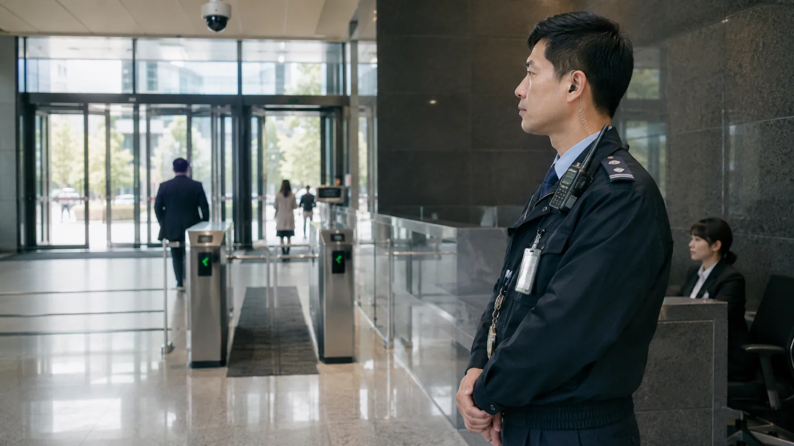
보안관리
보안팀장이 낮 시간을, 보안대원이 24시간 맞교대로 야간을 맡습니다. 출입 통제와 순찰, CCTV 관제, 비상 상황 초동 대응을 한 사람이 아니라 정해진 절차로 처리합니다.
- 출입 관리, 방문객 안내, 택배·물류 반출입 확인
- 정기 순찰과 야간 순찰 기록, CCTV 관제
- 화재·정전·침수 등 비상 시 초동 조치와 보고 체계
- 시설소유자·주차장 배상책임보험 가입 운영
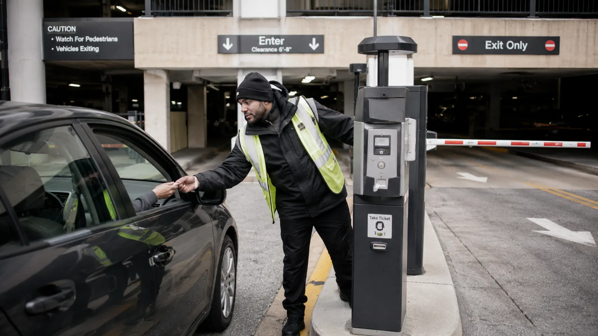
주차관리
유인 안내부터 무인 주차 시스템 운영까지 건물 규모에 맞춥니다. 전기차 충전 구역 안내, 방문객 등록, 정산 민원 처리도 주차관리 범위입니다.
- 입·출차 안내, 방문 차량 등록, 정산 처리
- 번호인식(LPR) 무인 주차 시스템 도입 검토와 운영 파트너 연계
- 주차장 안전 순찰과 전기차 충전 구역 관리
- 주차 수익 개선과 유휴 주차면 활용 제안
운영 체계와 견적 방식
건물 종합관리 견적은 투입 인원과 근무 형태를 기준으로 투명하게 산출합니다. 어떤 직무를 몇 명이 어떤 시간에 맡는지, 어떤 비용이 포함되고 무엇이 별도인지를 처음부터 나눠서 보여드립니다.
- 인건비
- 직무별 인원 × 근무 형태(일근·3교대·24시간 맞교대) 기준. 법정 최저시급, 4대보험, 연차·야간·직책·면허선임 수당, 퇴직급여 충당금 반영
- 복리후생·보험
- 식대, 피복비, 안전교육비, 관리소 운영비, 영업배상책임보험
- 일반관리비·이윤
- 중계 금액에 정해진 비율로 산정. 별도 항목으로 표기
- 견적 외 별도
- 소모품·자재비, 외주 유지관리비, 법정검사비, 승강기·소방·소독방역 비용, 관리용 비품과 청소 장비
- 보고
- 월간 관리 보고서 — 점검·수선·민원·에너지 사용·공실 현황과 다음 달 계획
근무시간은 입주사 근무시간에 맞춰 탄력적으로 운영합니다. 관리 인원과 근무표, 층별 미화 배치계획은 제안서에 첨부합니다.
중소형 빌딩을 위한 원격·표준화 관리
대형 빌딩은 관리소와 전문 인력을 두지만, 꼬마빌딩과 중소형 근생·상업시설은 사람을 상주시키기 어렵습니다. 관리가 건물주 개인과 관리인, 개별 업체로 흩어지면 법정검사·수선·민원·에너지 기록이 한곳에 남지 않습니다.
지유공간개발은 지유코퍼레이션의 관리 매뉴얼과 긴급대응 체계를 중소형 빌딩에 맞게 가볍게 다시 짭니다. 장비를 직접 만들지 않고, 검증된 파트너 솔루션을 연동해 “무엇을 보고, 어떤 기준으로 조치하고, 어떻게 보고할지”의 운영 체계를 제공합니다.
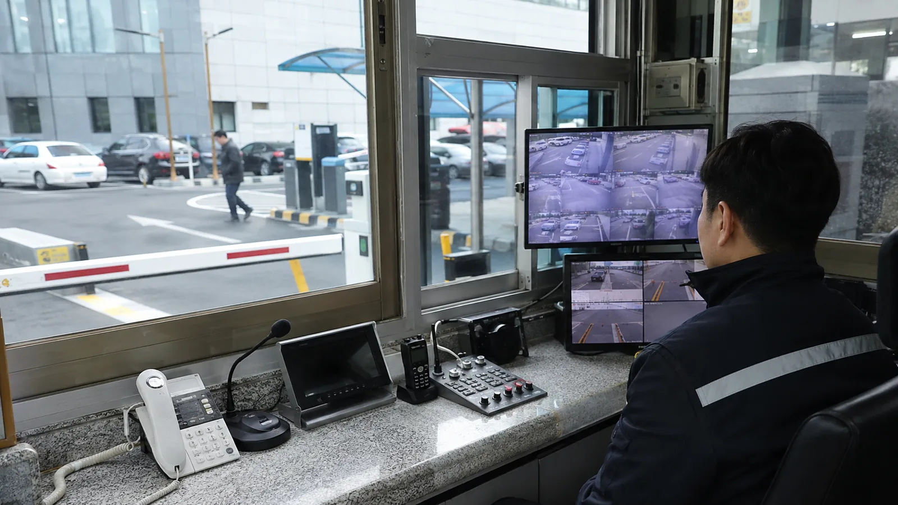
- 기록전기·수도·에너지, 시설점검, 수선, 민원, 공실, 임대현황을 한곳에 기록초기에는 모바일 입력, 기존 솔루션 연동
- 모니터링누수·CCTV·출입·주차·온습도·스마트미터 이상 감지검증된 IoT·주차관제 파트너 연동
- 작업 절차법정검사, 예방점검, 외주업체, 작업지시, 사진 보고를 표준 절차로지유 관리 매뉴얼 기반
- 긴급 대응이상 알림 → 긴급출동 → 업체 배정 → 작업 완료 확인지유코퍼레이션 기술·FM 네트워크 연계
- 월간 리포트점검 결과, 공사비 계획, 공실·운영비 개선안진단 리포트와 연결
관리 계약에서 공간사업으로
관리 보고서에서 공실·리뉴얼·설비 교체 이슈가 보이면 그 자리에서 밸류업 제안을 드립니다. 관리 회사가 건물의 문제를 가장 먼저 알기 때문에, 가장 좋은 첫 고객은 이미 관리 중인 건물입니다.
관리 현장
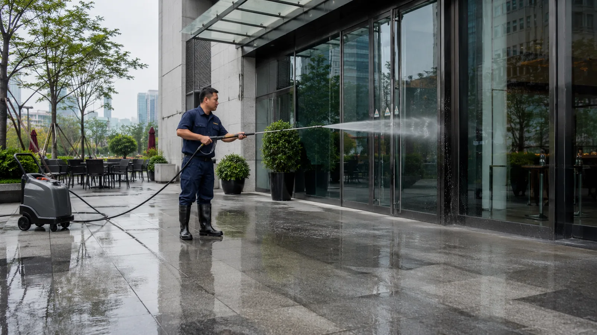
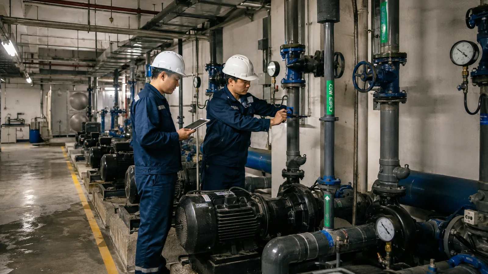
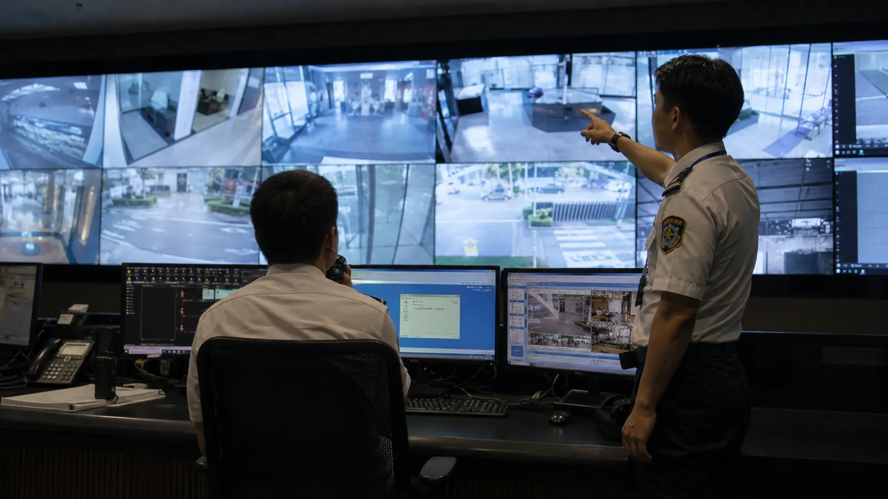
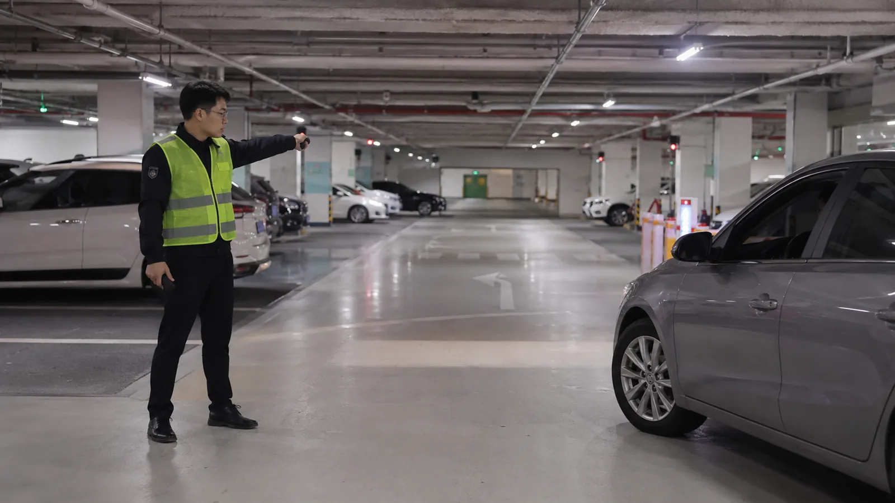
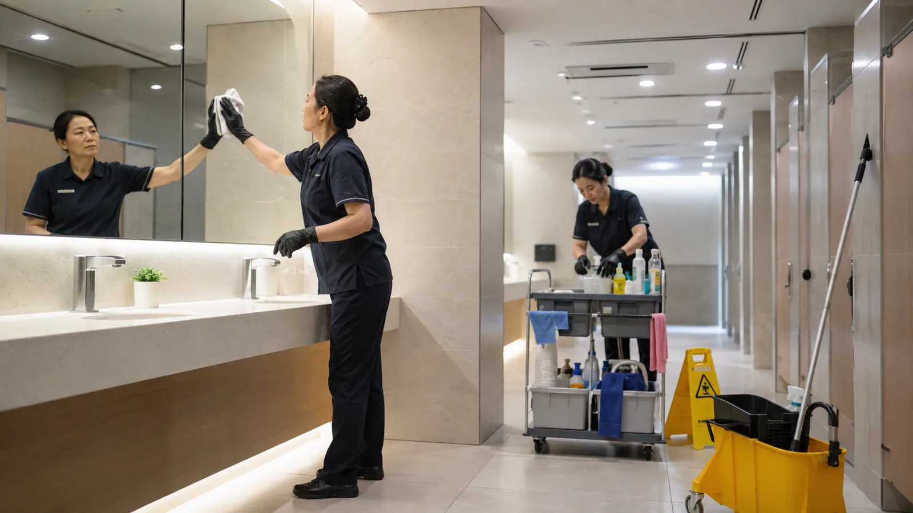
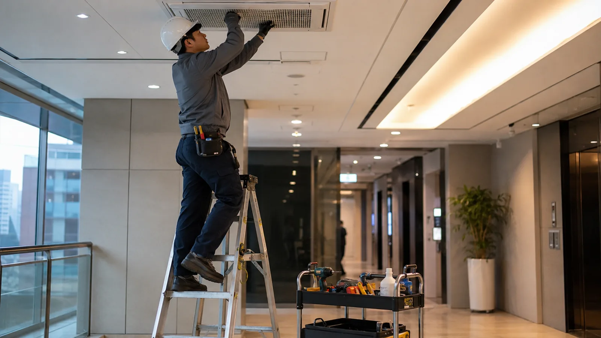
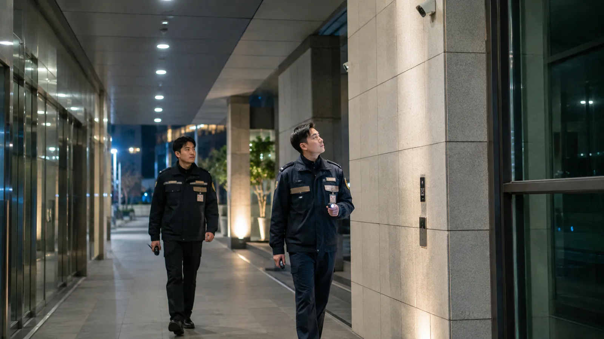
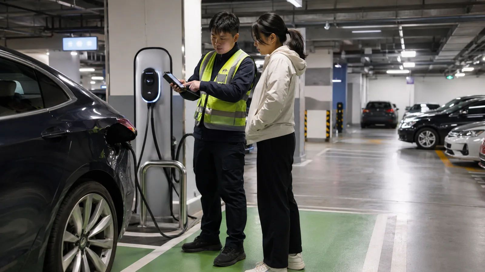